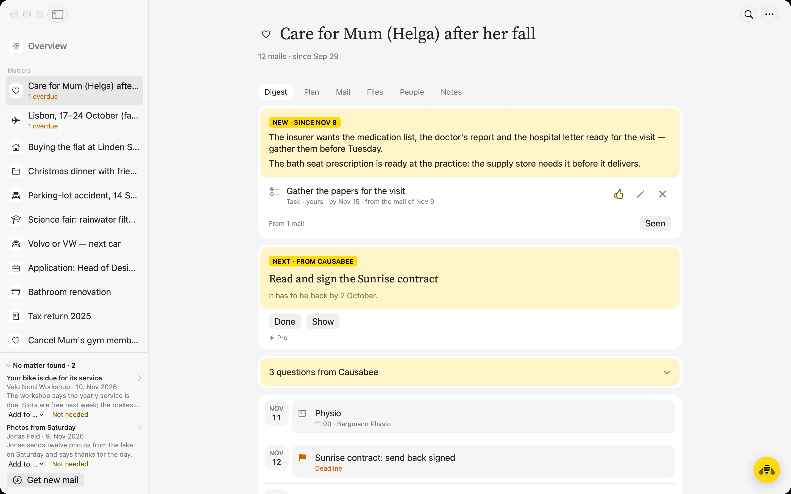
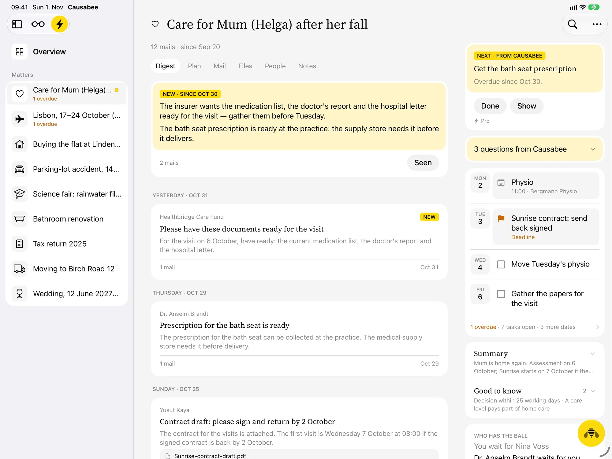
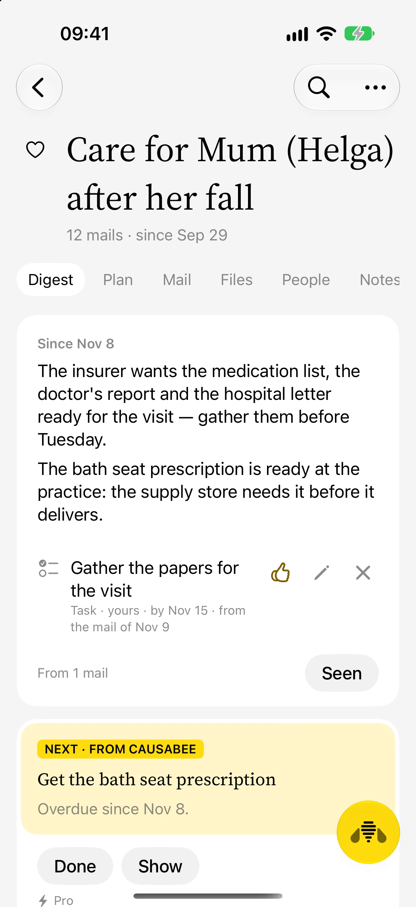
ON YOUR MAC
Dr. Brandt has the bath seat prescription for Helga.
WHAT THE AI SEES
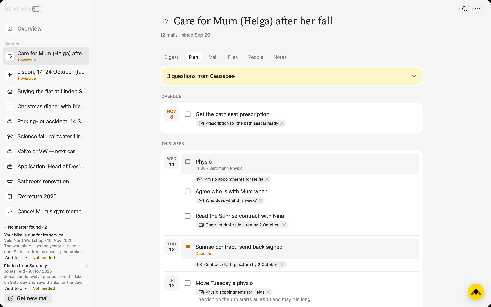
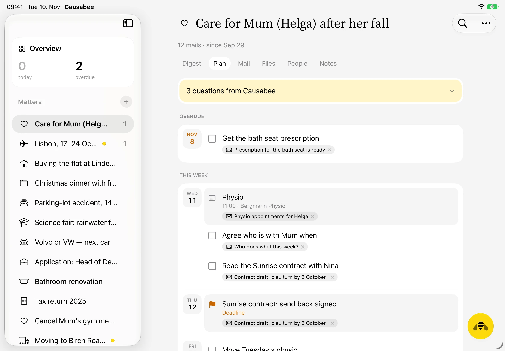
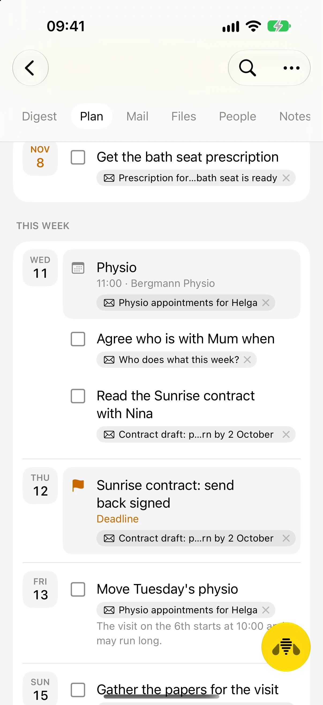
09:41
Cancel
The document
What is it?
Saved on this iPhone, in Files › On My iPhone › Causabee, under this name. Then scanned here and sorted into “Care for Mum (Helga) after her fall” when you tap “Sort in”.
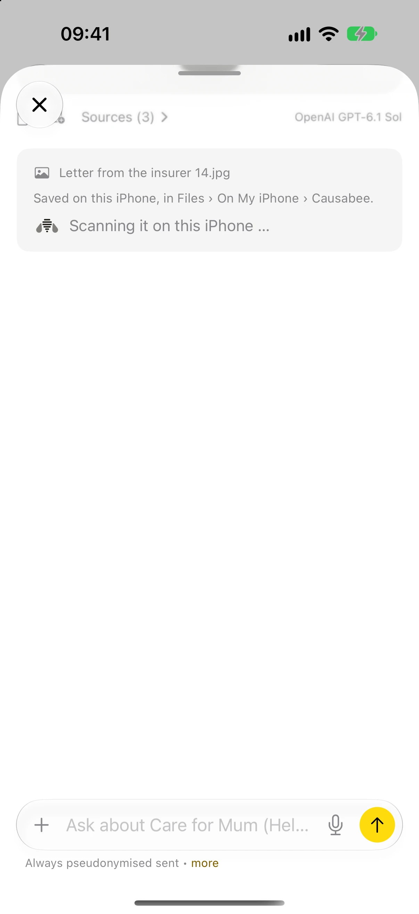
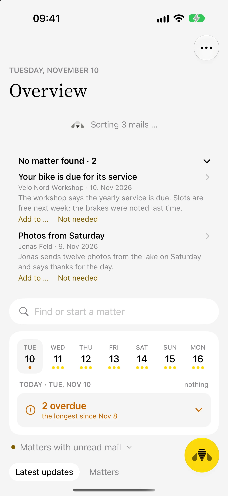
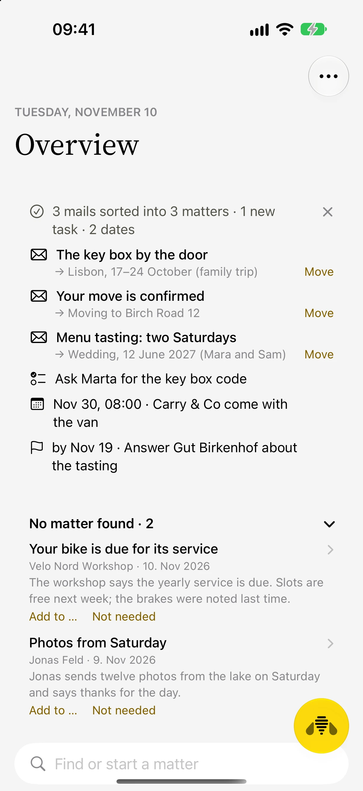
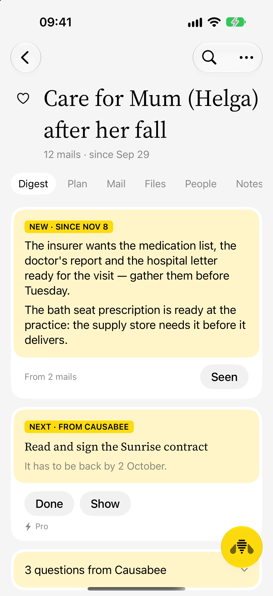
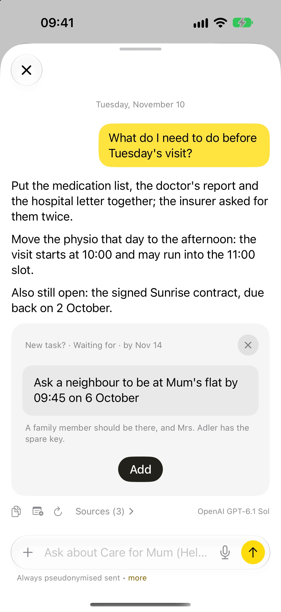
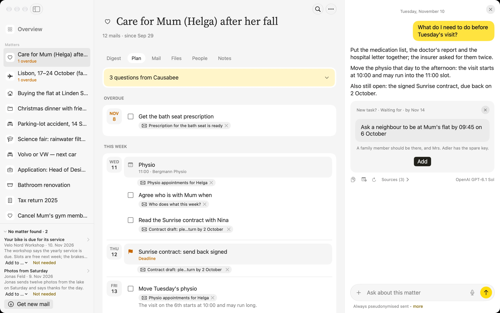
For Mac · iPad and iPhone in beta · causabee.app